Nicht immer stehen alle benötigten Variablen innerhalb einer LIST-Liste fix zur Verfügung. Um trotzdem die gewünschte Ausgabe zu erhalten, können solche Felder mit Hilfe der Formelfunktion "VB-Script-Formel" kreiert werden.
Beispiele
ü Mathematische Berechnungen
In
einer Artikelliste soll der %-Anteile des Lagerstands vom Artikel bezogen auf
den Gesamtlagerstand ausgewiesen werden.
ü Zusammenführen von Feldern
Die
einzelnen Felder der Telefonnummer sollen in einer Debitorenliste innerhalb
einer Spalte angezeigt werden.
ü Ableiten von Daten
Wenn der
Umsatz größer x ist, dann soll bitte in einer Sortierspalte das Wort "WICHTIG"
erscheinen.
Um eine VB-Script-Formel zu erstellen, wird diese aus dem Variablenbereich per Doppelklick übernommen. Anschließend öffnet sich automatisch das Formelfenster, in welchem die VB-Script-Formel hinterlegt werden kann.
Hinweis
Es können maximal 50 VB-Script-Formeln pro Liste verwendet werden.
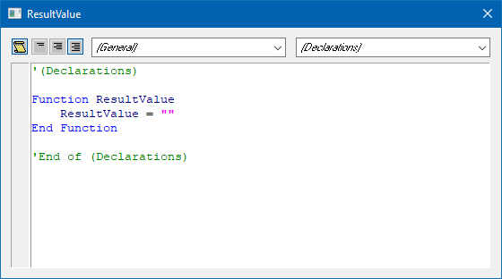
Folgende Punkte sind bei der Erstellung von Formeln zu beachten:
Ø Formel-Objekte - Allgemein
Es stehen die Objekte "CWLStart", "General" und "LISTScripts" zur Verfügung. Die für diese Art von Formeln extra geschaffenen LISTScripts-Objekte beinhalten die Methoden "GetValue" und "Property".
Beispiel
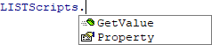
Ø Formel-Objekte - LISTScripts.GetValue
Per "GetValue" kann eine Variable aus der LIST-Liste geholt und mit dieser gearbeitet werden.
Beispiel
Ø Formel-Objekte - LISTScripts.Property
Die Methode "Property" ist ein Speicher, welcher innerhalb einer LIST-Listen-Ausgabe zeilenübergreifend zur Verfügung steht und nach dem Beenden der Ausgabe automatisch initialisiert wird. Die Speicher selber können über Angabe einer Zahl selber definiert werden.
Beispiel
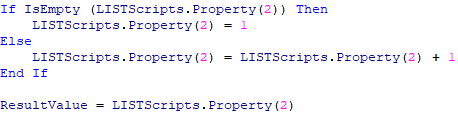
Ø ResultValue
Das "ResultValue" stellt das Ergebnis der Formel da und wird bei der Ausgabe der LIST-Liste dargestellt. Die Art des Formats wird nicht in der Formel selber, sondern im LIST-Aufbau definiert (siehe Feld "Formatierung").
Beispiel
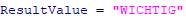
Ø Ergebnisvariablen (0,801) bis (0,850)
Die VB-Script-Formeln erhalten in der Reihenfolge wie sie definiert sind die View0-Ergebnisvariablen 801 bis 850 zugewiesen, wobei die Variablen entsprechend dem selektierten Typ immer neu angelegt werden. Das Ergebnis der ersten Formel wird in die 801 abgestellt. Dadurch ist es möglich, in z.B. der 3 VB-Script-Formel mit der Ergebnis der ersten Formeln weiterzuarbeiten.
Beispiel
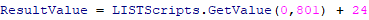
Ø Formatierung
Über die Spalte "Formatierung" in der Tabelle "Variablen für Ausgabe" kann definiert werden, wie die VB-Script-Formel optisch ausgegeben werden soll. In der weiteren Folge wird der Inhalt der Formeln auch entsprechend in den BI-Ausgaben behandelt.
Ø Editieren einer bestehenden Formel
Eine VB-Script-Formel wird immer mit der Tabelle "-2" und "Spalte "0" in den LIST-Aufbau eingefügt. Um eine bestehende Formel zu editieren, muss einfach ein Doppelklick auf "-2" oder "0" erfolgen.
Beispiel 1 - Mathematische Berechnung
In der Personenkontenliste soll der Umsatz/pro Jahr auf den durchschnittlichen Umsatz pro Monat berechnet werden. Der Umsatz steht in der Spalte C060 der Kontenview V050. Mit der Funktion "GetValue(Tabelle/Spalte)" wird die Variable herangezogen.
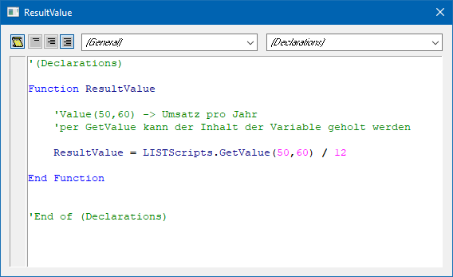
Für eine optisch ansprechende Ausgabe wird abschließend die Formatierung "04 - Double" gewählt.
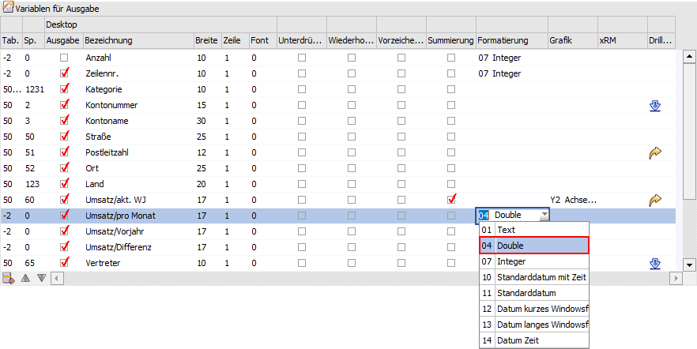
Beispiel 2 - Ableiten von Daten
Wenn der monatliche Umsatz größer 5.000,- € ist, dann soll der Text "guter Kunde" erscheinen, ansonsten "normaler Kunde". Damit man nicht den monatlichen Wert erneut berechnen muss, wird auf den bereits errechneten monatlichen Umsatz zugegriffen werden.
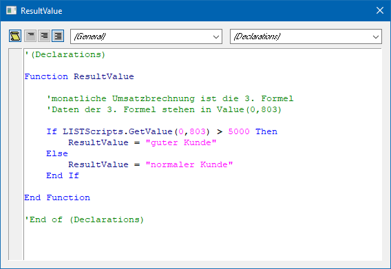
In der Ausgabe wird abhängig vom Monatsumsatz der Text ausgegeben.
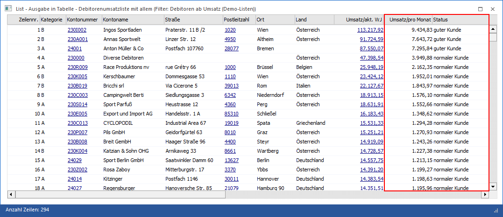
Achtung
Die Zeilen einer Liste können natürlich verschoben werden. Sollte mit Formeln gearbeitet werden, dann sollte immer geprüft werden, ob mit Ergebnissen in einer anderen Formel weitergearbeitet wird. Das Ergebnis der ersten Formel wird in die Variable (0,801) gestellt.
Beispiel 3 - Nutzung von Speichern
Es soll eine fortlaufende Zeilennummerierung erzeugt werden. D.h. es ist notwendig bei der Zahl mit "1" zu beginnen und in jeder darauffolgenden Zeile die Zahl "1" zum bestehenden Ergebnis dazu zu addieren.
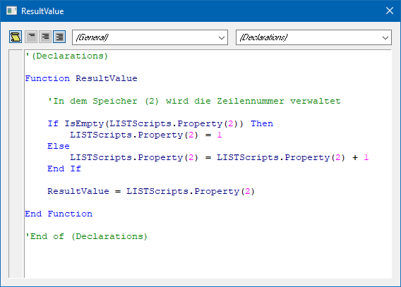
Beispiel 4 - Zugriff auf nicht vorhandene Daten I
Es soll in einer Spalte einer Debitorenliste der Vorjahresumsatz ausgegeben werden. Da diese Information nicht direkt zur Verfügung steht (alle Daten der Liste sind in der Regel basierend auf dem aktuellen Wirtschaftsjahr), wird die benötigte Zahl per SQL-Zugriff geholt.
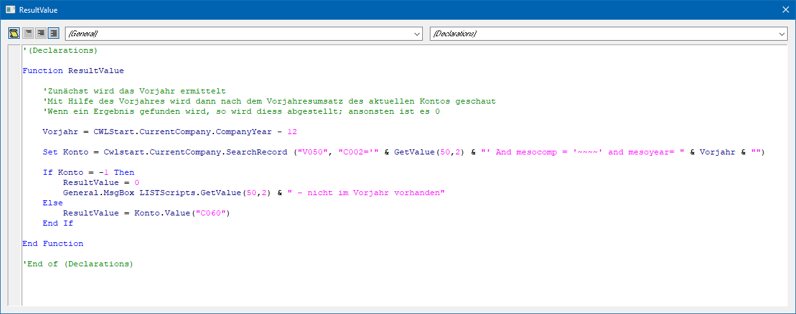
Beispiel 5 - Zugriff auf nicht vorhandene Daten II
In einer Projektliste soll der Pre-Sales-Status ausgegeben werden. Innerhalb der Liste steht allerdings die Tabelle 64, in welcher die Klartexte der Stati stehen, nicht zur Verfügung. Aus diesem Grund werden die Texte per SQL-Statement geholt, mit dem vorliegen Status verglichen und ausgegeben.
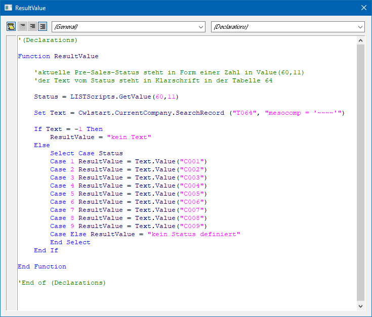
Beispiel 6 - Zugriff auf nicht vorhandene Daten III
In einer Artikelliste soll ausgegeben werden, ob sich Ware in Zulauf befindet, d.h. ob es lt. Disposition offene Einkaufsmengen gibt.
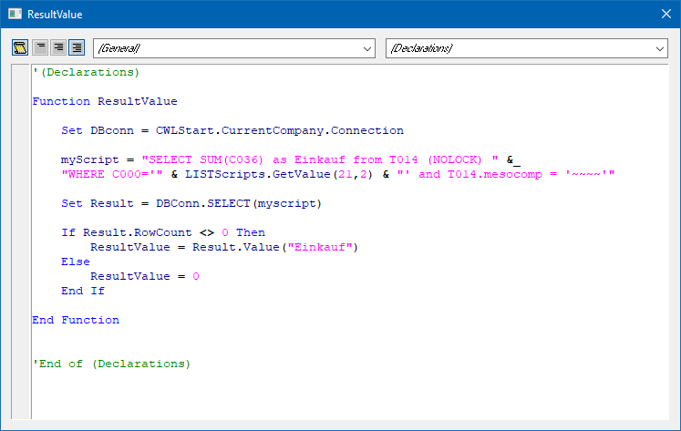
Beispiel 7 - Zugriff auf nicht vorhandene Daten IV
Es wird mit benutzerdefinierten Variablen gearbeitet, deren Inhalt automatisch in die BI-Datenbank abgelegt wird. In einer Debitorenliste soll nun der Inhalt solch einer Variable ausgegeben werden, obwohl die Pflege der Daten über eine andere Liste stattfindet.
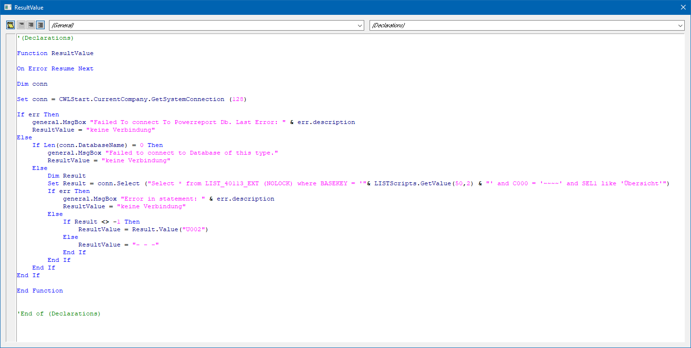